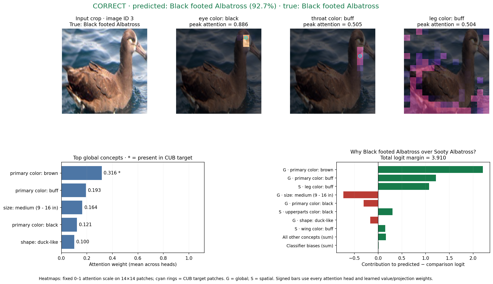
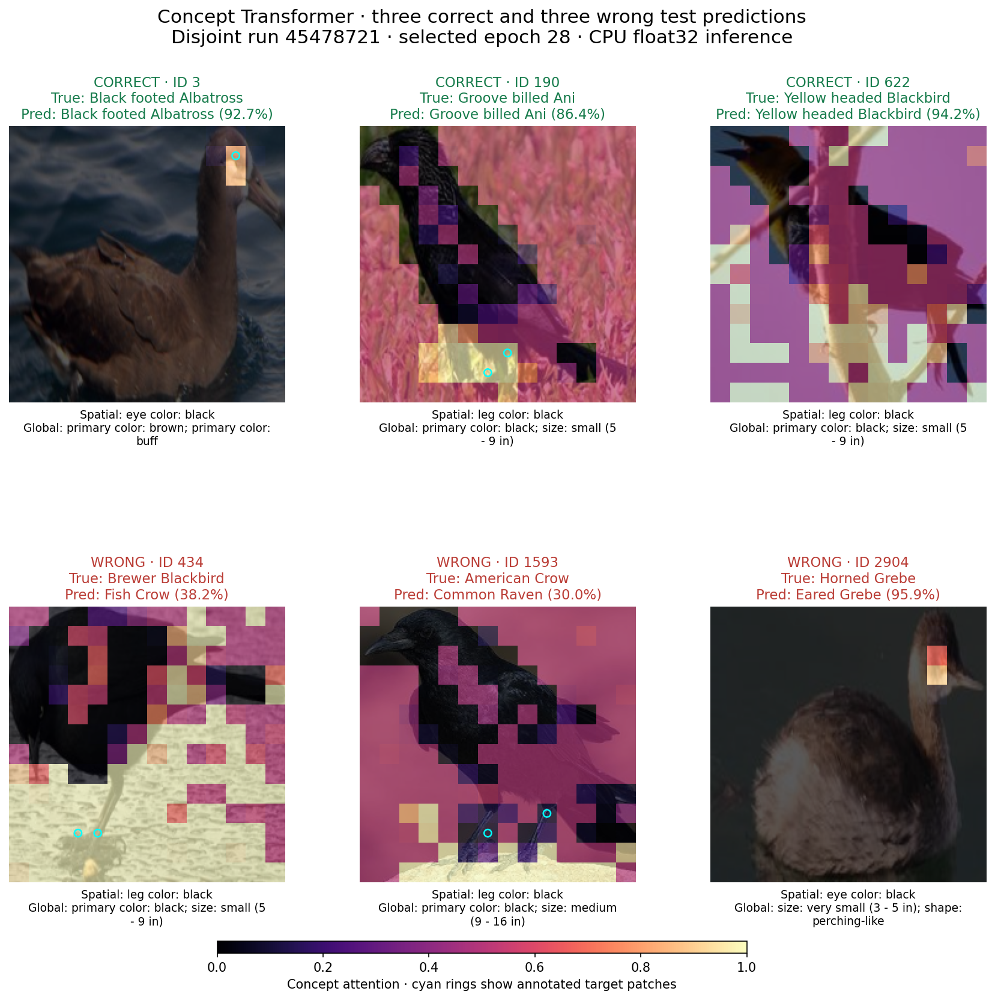
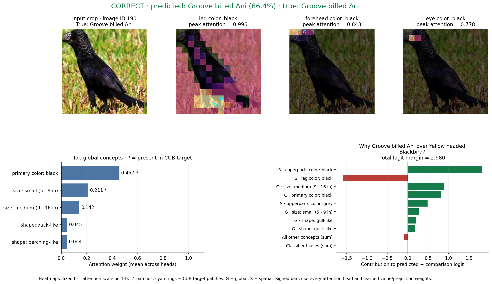
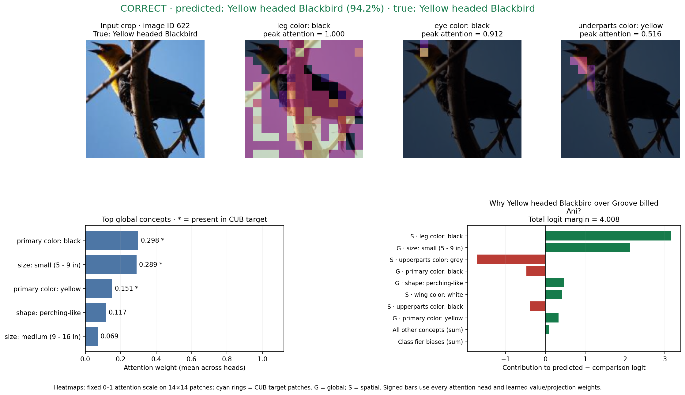
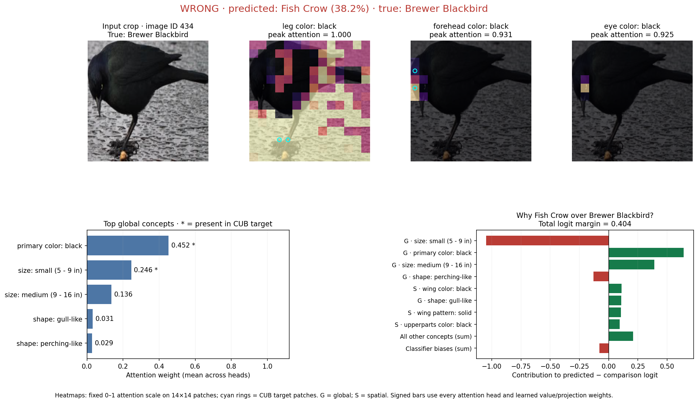
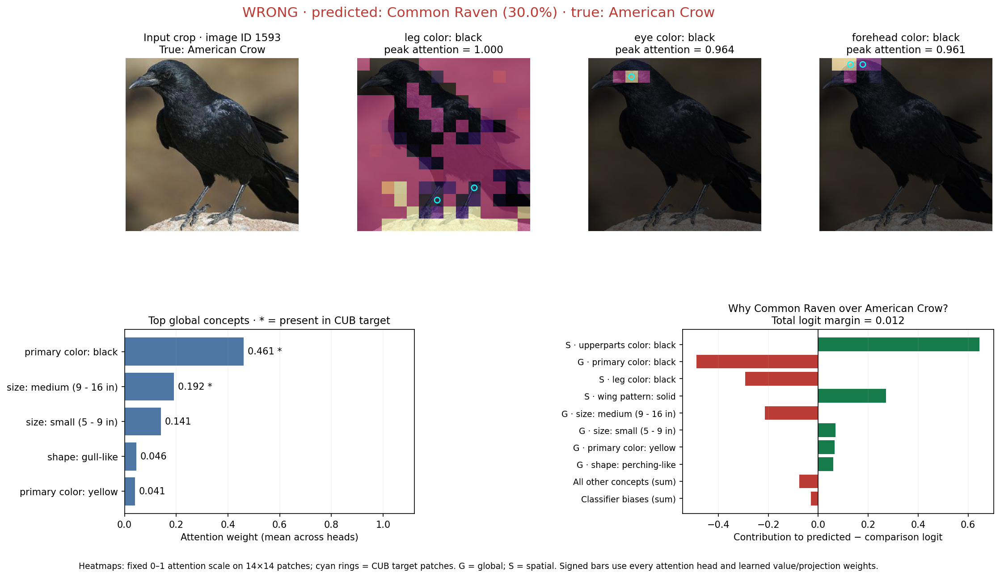
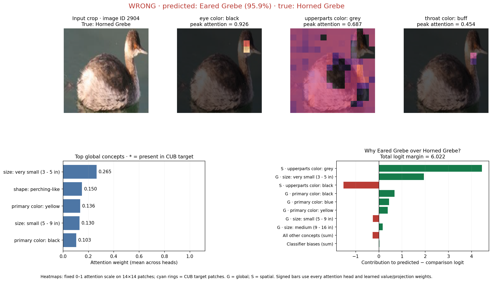

Correct: Black footed Albatross → Black footed Albatross
Image ID 3 · prediction 92.7% · true-class probability 92.7%

Three correct and three incorrect predictions from the saved disjoint test set. Checkpoint: run 45478721, selected epoch 28. These examples were recomputed in CPU float32 with the saved weights.
Heatmaps show concept attention using a fixed 0–1 scale; cyan rings mark positive CUB spatial targets. Global bars show attention and mark annotated concepts with *. Signed bars reconstruct the predicted-versus-comparison logit margin: green supports the prediction; red supports the comparison. For errors the comparison is the true class; for correct predictions it is the runner-up.
The three spatial maps are selected by largest peak attention, with different attribute families when possible. Attention denotes how the model represents an input; the signed contribution also includes learned classifier weights. An unmarked target does not prove an attribute is absent. These six cases illustrate model behavior and do not estimate explanation quality over the test set.
Paper: Eq. 2 and Figs. 4–5 · Sample details and provenance · Overview PDF

Image ID 3 · prediction 92.7% · true-class probability 92.7%

Image ID 190 · prediction 86.4% · true-class probability 86.4%

Image ID 622 · prediction 94.2% · true-class probability 94.2%

Image ID 434 · prediction 38.2% · true-class probability 25.5%

Image ID 1593 · prediction 30.0% · true-class probability 29.7%

Image ID 2904 · prediction 95.9% · true-class probability 0.2%
